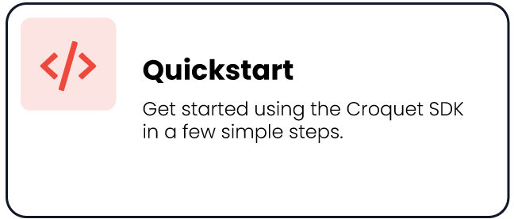
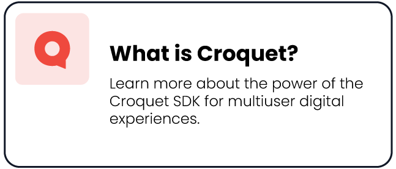
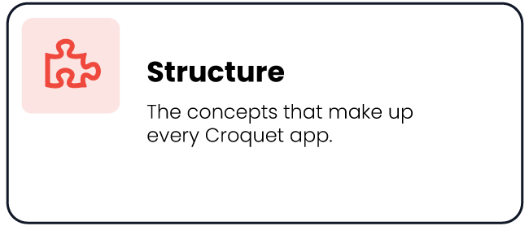

The Croquet SDK allows you to create collaborative web experiences without any server-side code, such as multi-user apps or multi-player games. These apps can be stand-alone, or they can be designed to take advantage of our Greenlight collaborative environment (which itself is also built on Croquet).
Please take a moment to review our Code of Conduct and join our Developer Slack
| test | test | test |
|---|---|---|
|  |  |  |
What is Croquet?
Croquet is a synchronization system for multiuser digital experiences. It allows multiple users to work or play together within a single shared distributed environment, and it guarantees that this distributed environment will remain bit-identical for every user.
This synchronization is largely invisible to the developer. Creating a Croquet application does not require the developer to write separate client and server code, or deploy a server. Applications are developed as though they are local, single-user experiences, and the Croquet library takes care of the rest.
Quickstart
There are 3 main ways to use our SDK:
-
CodePen: play with our tutorials, click "Edit on CodePen", and develop your app there. To share it, change the view to full screen, and share the pen's url. Alternatively, click "Export" and choose "Export .zip" to download your app to your local computer for further editing and uploading to your own website.
-
Script Tag: Add the following inside your page's
<head>tag, possibly replacing@@CROQUET_VERSION_MINOR@with the version you want:``<meta charset="utf-8"> <script src="https://unpkg.com/@croquet/croquet@@CROQUET_VERSION_MINOR@"></script>``This will create the
Croquetglobal to accessCroquet.Modeletc.NOTE: See unpkg.com for ways to link to different versions or the latest version automatically. However, we do update the SDK quite often, and cannot promise that pre-1.0 versions will keep working forever, so please keep your apps up-to-date.
-
NPM: install the
@croquet/croquetpackage:$ npm install @croquet/croquetThen import it in your JS file:
import * as Croquet from "@croquet/croquet"Again, make sure to specify
charset="utf-8"for your HTML or your script tags.
We frequently update the SDK so be sure to always use the latest (until we have a stable release).
Main Concepts
Every Croquet application consists of two parts:
-
The views handle user input and output. They process all keyboard / mouse / touch events, and determine what is displayed on the screen.
-
The models handle all calculation and simulation. This is where the actual work of the application takes place. The models are saved, shared, and loaded automatically.
Models are guaranteed to always be identical for all users. However, the views are not. Different users might be running on different hardware platforms, or might display different representations of the models.
When you launch a Croquet application, you automatically join a shared session. As long as you're in the session, your models will be identical to the models of every other user in the session.
To maintain this synchronization, the models and the views communicate through events. When you publish an event from a view, it's mirrored to everyone else in your session, so everyone's models receive exactly the same event stream.
This mirroring is handled by reflectors. Reflectors are stateless, public message-passing services located in the cloud.
Snapshots are archived copies of all models in a session. Croquet apps periodically take snapshots and save them to the cloud. When you join an existing session, you sync with the other users by loading one of these snapshots.
Creating a Croquet App
To create a new a Croquet app, you simply define your own models and views. These classes inherit from the base classes Model and View in the croquet library.
A simple app often only has one model and one view. In that case, the view contains all your input and output code, and the model contains all your simulation code.
class MyModel extends Croquet.Model {
init() {
...
}
}
MyModel.register("MyModel");
class MyView extends Croquet.View {
constructor(model) {
super(model);
...
}
update(time) {
...
}
}
You then join a session by calling Session.join and passing it your model and view classes. Session.join automatically connects to a nearby reflector, synchronizes your model with the models of any other users already in the same session, and starts executing.
You do need to provide some session meta data, like an appId, session name, and a password. Below we use autoSession/autoPassword but you can instead use whatever makes most sense for your app. In the codepen example above we even use constants for all.
const appId = "com.example.myapp";
const name = Croquet.Session.App.autoSession();
const password = Croquet.Session.App.autoPassword();
Croquet.Session.join({appId, name, password, model: MyModel, view: MyView});
That's it. You don't need to worry about setting up a server, or writing special synchronization code. Croquet handles all of that invisibly, allowing you to concentrate on what your app does.
Models
Croquet models are a little different from normal JavaScript classes. For one thing, instead of having a constructor, they have an init() method. init only executes the very first time the model is instantiated within a brand new session. If you join a session that's already in progress, your model will be initialized from a snapshot instead.
class MyModel extends Croquet.Model {
init() {
...
}
}
MyModel.register("MyModel");
Also, every Croquet model class needs to have its static register() method called after it is defined. This registers the model class with Croquet's internal class database so it can be properly stored and retrieved when a snapshot is created.
If your application uses multiple models, you instantiate them by calling create() instead of new.
See Model for the full class documentation.
Views
When Session.join() creates the local root model and root view, it passes the view a reference to the model. This way the view can initialize itself to reflect whatever state the model may currently be in. Remember that when you join a session, your model might be initalized by running its init() method, or it might be initialized by loading an existing snapshot. Having direct access to the model allows the view to configure itself properly no matter how the model was initialized.
class MyView extends Croquet.View {
constructor(model) {
super(model);
...
}
update(time) {
...
}
}
This illustrates an important feature of Croquet: A view can read directly from a model at any time. A view doesn't need to receive an event from a model to update itself. It can just pull whatever data it needs directly from the model whenever it wants. (Of course, a view shouldn't write directly to a model, because that would break synchronization.)
The root view's update() method is called every time the application window requests an animation frame (usually 60 times a second). This allows the view to continually refresh itself even if the models are updating more slowly. update() receives the local system time at the start of the frame as its argument.
If your app uses more than one view, you root view's update method needs to call all other views' update.
See View for the full class documentation.
Events
Even though views can read directly from their model, the primary way models views communicate is through events.
To send an event, call publish() in either the model or the view:
publish(scope, event, data)
- Scope is a namespace so you can use the same event in different contexts.
- Event is the name of the event itself.
- Data is an optional data object containing addtional information.
And to receive an event, call subscribe():
subscribe(scope, event, this.handler)
- Scope is a namespace so you can use the same event in different contexts.
- Event is the name of the event itself.
- Handler is the method that will be called when the event is published. (The handler accepts the data object as an argument.)
Events can be used to communicate between models themselves or views or any combination. However, events sent between models and views are handled specially:
Input events (published by a view and handled by a model) are mirrored by the reflector and sent to every replica of the model in your current session.
By mirroring view-to-model events through the reflector, Croquet ensures that all replicas of the model stay in sync. All replicas of the model receive exactly the same stream of events in exactly the same order.
Output events (published by a model and handled by a view) are queued up locally, and handled right before invoking update().
This is to ensure a strict separation between model code execution and view code execution. The model code must be executed precisely the same for every user to stay in sync, no matter if there are views subscribed on that user's machine or not.
There are also two special events that are generated by the reflector itself: view-join and view-exit. These are broadcast whenever a user joins or leaves a session.
Time
Models have no concept of real-world time. All they know about is simulation time.
Every event that passes through the reflector is timestamped. The current simulation time in the model is simply the timestamp of the last event it received. This allows different replicas of the model to stay in sync even if their local real-world clocks diverge.
Calling this.now() will return the current simulation time.
In addition to normal events, the reflector also sends out a regular stream of heartbeat ticks. Heartbeat ticks advance the model's simulation time even if the view isn't sending any events. By default the reflector sends out heartbeat ticks 20 times a second, but you can change the frequency at session start.
The method this.future() can be used to schedule an event in the future. For example, if you wanted to create an animation routine in a model that executes every 100 milliseconds, it would look like this:
step() {
// ... do some stuff ...
this.future(100).step();
}
Note that the ticks-per-second rate of the reflector is independent of the future interval used by your models. Individual models may use different future times.
Snapshots
Snapshots are copies of the model that are saved to the cloud. When your Croquet application is running, the reflector will periodically tell it to perform a snapshot.
Snapshots are used to synchronize other users when they join a session that's already in progress. But they also provide automatic save functionality. If you quit or reload while your application is running, it will automatically reload the last snapshot when the application restarts.
Note: The snapshot code is currently unoptimized, so you may experience a performance hitch when the snapshot is taken. The Croquet team is working to resolve this issue and make snapshots invisible to both user and developer, but for the time being your application may occasionally pause if your model is very large.
Random
Croquet guarantees that the same sequence of random numbers is generated in every replica of your application. If you call Math.random() within a model it will return the same number for all replicas.
Calls to Math.random() within a view will behave normally. Different instances will receive different random numbers.
Changelog
| date | item |
|---|---|
| 2021-05-18 | release 0.5.0 (bug fixes; seamless rejoin with default rejoinLimit of 1000ms, autoSession / autoPassword are async now; added viewCount and static wellKnownModel) |
| 2020-11-20 | release 0.4.0 (bug fixes; enable encryption, Session.join takes named args, Model.register requires class id, getModel() and extrapolatedNow() added, removed wellKnownName arg from Model.create) |
| 2020-09-03 | release 0.3.3 (bug fixes; session.leave() returns promise, support for virtual-dom) |
| 2020-08-21 | release 0.3.2 (bug fixes; much faster session creation) |
| 2020-06-08 | release 0.3.1 (bug fixes; "view-join" and "view-exit" events are now model-only) |
| 2020-05-18 | release 0.3.0 (bug fixes; Session.join instead of startSession, adds session.leave(), future message arguments are passed by identity, not copied anymore) |
| 2020-03-24 | release 0.2.7 (bug fixes; startSession supports passing options to root model's init, message replay no longer visible to app) |
| 2019-12-12 | release 0.2.6 (bug fixes; works on MS Edge) |
| 2019-10-18 | release 0.2.5 (bug fixes; new widget API) version aligned with npm |
| 2019-10-01 | release 0.2.2 (bug fixes; updated qr-code support) |
| 2019-09-13 | release 0.2.1 (bug fixes) |
| 2019-09-05 | release 0.2.0 (scalable reflector fleet, fully persistent sessions) |
| 2019-08-14 | release 0.1.9 (bug fixes; automatic reflector selection) |
| 2019-07-24 | release 0.1.8 (bug fixes) |
| 2019-07-24 | release 0.1.7 (bug fixes; reverted to 0.1.6 due to instabilities) |
| 2019-07-23 | new US east coast reflector available in startSession |
| 2019-07-18 | release 0.1.6 (bug fixes; documentation updates; inactive clients will now be disconnected after 10 seconds) |
| 2019-07-10 | release 0.1.5 (bug fixes) |
| 2019-07-09 | release 0.1.4 (bug fixes) |
| 2019-07-09 | tutorial fleshed out: 3D Animation |
| 2019-07-06 | new tutorial: View Smoothing |
| 2019-07-01 | release 0.1.3 (bug fixes; add 5-letter moniker to session badge) |
| 2019-06-29 | release 0.1.2 (bug fixes) |
| 2019-06-28 | release 0.1.1 (bug fixes) |
| 2019-06-27 | docs: View.subscribe, startSession |
| 2019-06-26 | release 0.1.0 |
Copyright © 2019, 2020 Croquet Corporation
THE CROQUET SDK IS PROVIDED “AS IS”, WITHOUT WARRANTY OF ANY KIND, EXPRESS OR IMPLIED, INCLUDING BUT NOT LIMITED TO THE WARRANTIES OF MERCHANTABILITY, FITNESS FOR A PARTICULAR PURPOSE AND NONINFRINGEMENT. IN NO EVENT SHALL THE AUTHORS OR COPYRIGHT HOLDERS BE LIABLE FOR ANY CLAIM, DAMAGES OR OTHER LIABILITY, WHETHER IN AN ACTION OF CONTRACT, TORT OR OTHERWISE, ARISING FROM, OUT OF OR IN CONNECTION WITH THE SOFTWARE OR THE USE OR OTHER DEALINGS IN THE SOFTWARE.